← All workProject 7 of 8
Project 07Designed and calculated, not built
Electric Scissor Lift Table
A 150 kg bench lift table that rises from 250 to 900 mm on a lead screw and a geared BLDC motor. Designed in Inventor as one assembly driven by deck height, with screw force, motor torque, pin, arm, buckling and tip-over calculations.
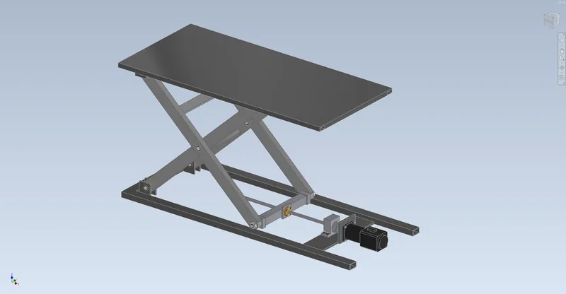
- Rated load
- 150kg
- Deck height
- 250-900mm
- Peak screw force, calculated
- 10.7kN
- Parts in assembly
- 76
01Overview
A workshop lift table with a 1200 x 560 mm deck. One scissor stage of RHS 60x30x3 steel arms on 900 mm pin centres carries the platform. The inner arms pivot on the base and roll under the platform; the outer arms pivot on the platform and ride on a nut carriage that rolls along the base rails. A TR16x4 lead screw pushes that carriage, driven through a jaw coupling by a 24 V, 200 W brushless gearmotor with a 71.5:1 planetary (StepperOnline, 33 Nm rated).
The screw sits on the carriage's pivot axis, so its force puts no moment on the nut. With the drive at the roller end, the screw is short when the force is high. One Inventor parameter, Lift (the deck height), sets the arm angle, platform height and carriage position. The assembly is checked for clashes at seven heights. Designed and calculated only; nothing has been built.
Tools Autodesk Inventor 2027 / Python / NumPy / Matplotlib
What I did
- Drove the whole mechanism from one Inventor parameter, the deck height. The arm angle comes from asin((Lift - 89)/900) inside Inventor, and each driven constraint was checked against my kinematics at three heights before I kept it.
- Sized the actuator from the physics instead of a rule of thumb. The torque curve showed the first motor would stall in the bottom 45 mm of the stroke with poor lubrication, so I swapped it for the 71.5:1 version and wrote the slower lift time into the specs.
- Laid out the drive so the screw force acts through the carriage's pivot axis and loads the screw in compression only while the screw is short.
- Wrote a buildability check with part numbers, fits, assembly order and an estimated cost (about $1,370). It lists five open items, including the screw's thin self-locking margin, which needs a brake or a maintenance prop.
Specification
- Deck
- 1200 x 560 x 4 mm steel plate on RHS 40x20x2 rails and edge tubes; 250 mm collapsed, 900 mm raised
- Scissor
- One stage, RHS 60x30x3 S355 arms, 900 mm pin centres, arm angle 10.3-64.3 deg; H = 89 + 900 sin(theta)
- Pivots
- 20 mm 42CrMo4 pins in SKF PCM 202330 E composite bushings, PCMW thrust washers, DIN 471 rings
- Rollers
- 4 x 6202-2RS on 15 mm pins pressed into the carriage and the inner arms (INA LR202 crowned rollers recommended)
- Drive
- TR16x4 bronze-nut lead screw, 51200 + 6200 in a C45 drive block, Lovejoy L-095 coupling, StepperOnline M82B200 200 W BLDC with a 71.5:1 planetary
- Performance (calc.)
- 177 s for a full lift (124 screw turns at 42 rpm); 66 W peak shaft power
- Mass (Inventor)
- 80.8 kg: platform 32.2, base 17.0, inner frame 11.6, outer frame 9.9, drive 6.9
- Assembly
- 76 occurrences, 23 unique files, 225 constraints, 0 DOF; footprint 1370 x 560 mm
02Design decisions4 changes
- 01
Changed the gearmotor after the torque check
- Finding
- The first pick was the 30:1 version (15 Nm, 100 rpm, 74 s lift). At 250 mm the arms sit at 10.3 deg and the screw has to push 10.7 kN, which takes 15.0 Nm with a greased nut and 19.0 Nm with poor lubrication.
- Action
- Switched to the 71.5:1 version of the same motor (33 Nm, 42 rpm) and capped the driver torque at 21 Nm to protect the 10 mm screw journal and the coupling.
- Outcome
- Torque margin went from 1.00 / 0.79 to 2.20 / 1.73. The cost is speed: a full lift now takes 177 s.
- 02
Screw in compression, short when it matters
- Finding
- Screw force falls from 10.7 kN collapsed to 0.9 kN raised, and the nut moves away from the drive end as the table rises. With the drive at the pivot end the screw would be in tension, and a small locknut would carry the full 10.7 kN.
- Action
- Put the drive block and gearmotor at the roller end. The thread shoulder bears on a 51200 thrust bearing.
- Outcome
- 11 mm of free screw at peak force; the lowest buckling safety factor is 6.8, at full height.
- 03
Solved the statics two ways
- Finding
- Pin forces depend on where the load sits. I solved four rigid bodies (11 unknowns) at 131 heights for four EN 1570-1 style load cases, using Inventor's masses and centres of gravity.
- Action
- Checked the screw force against virtual work (lifted weight times cot theta, plus the arm weights).
- Outcome
- The two methods agree to 3e-15. The worst case is the load on one lateral half: 8.9 kN through the centre pin, 70.6 MPa in the arms (SF 5.0).
- 04
Fixed 16 clashes found in Inventor
- Finding
- The first interference check found 16 clashing pairs, 355 mm3 in total. All of them were retaining rings, modelled 0.4-0.6 mm under their groove diameter.
- Action
- Rebuilt the rings so their bores sit on the groove.
- Outcome
- 0 clashes at 7 heights from 250 to 900 mm, 0 DOF, kinematics error 0.0.
03Views9 renders


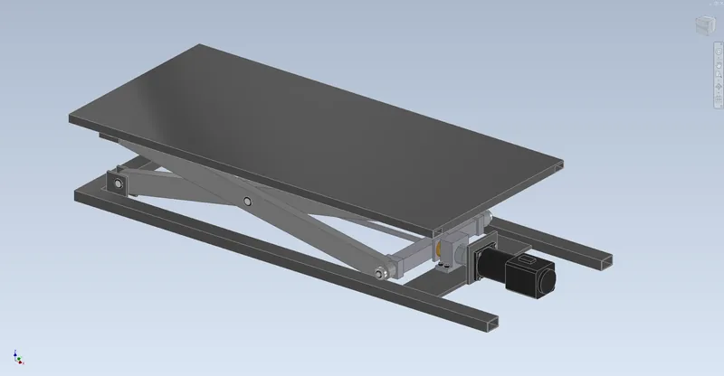

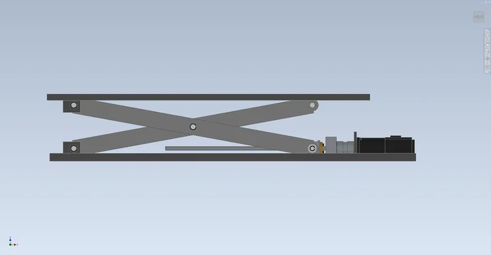

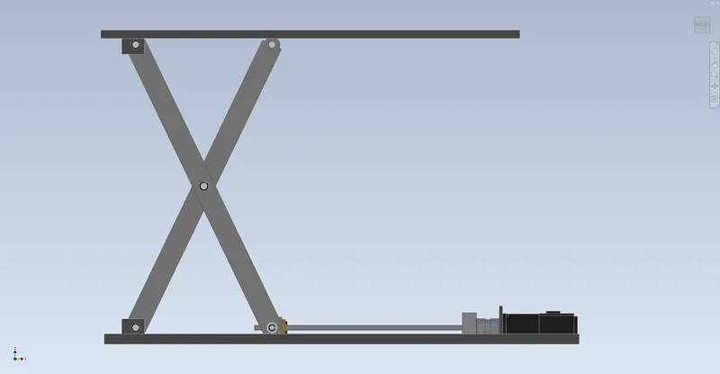

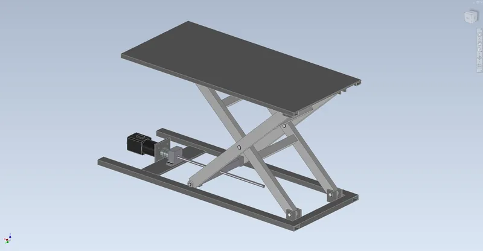

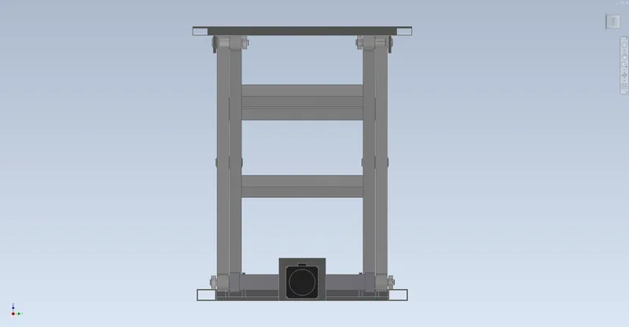

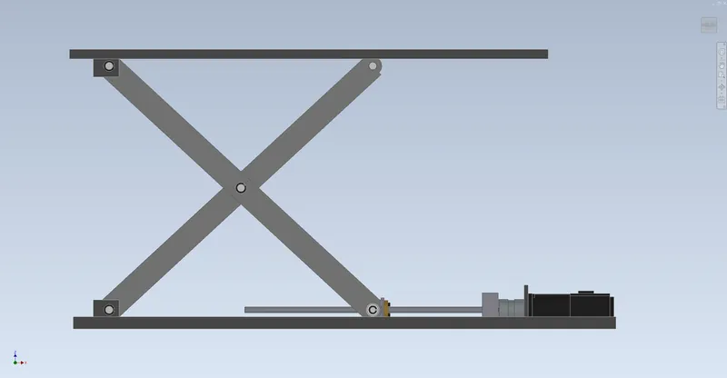

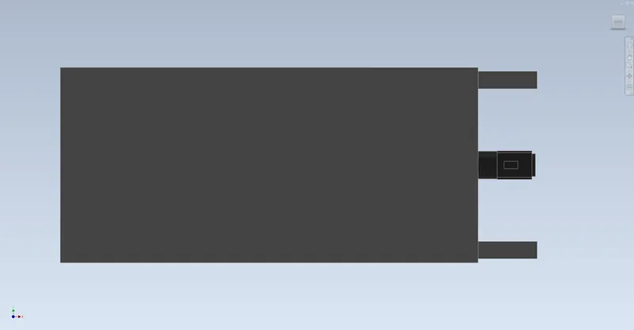

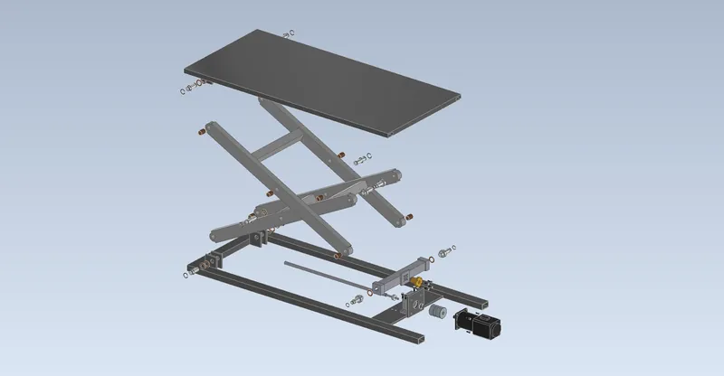
04Drawings6 sheets

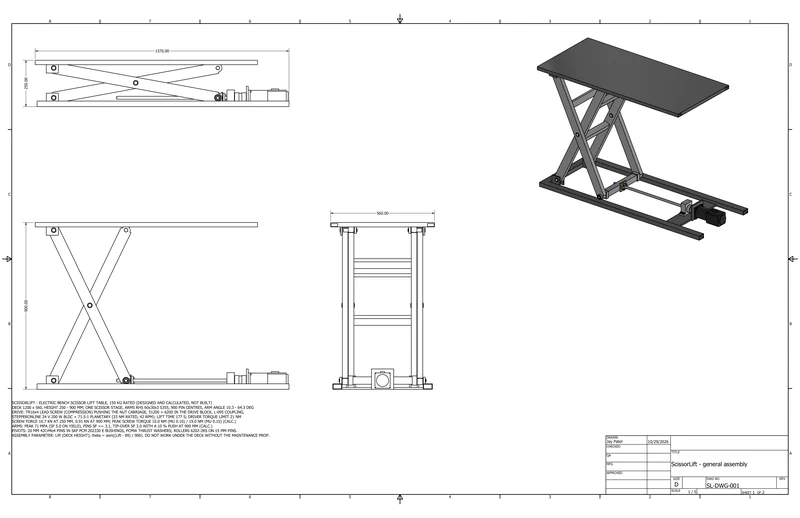

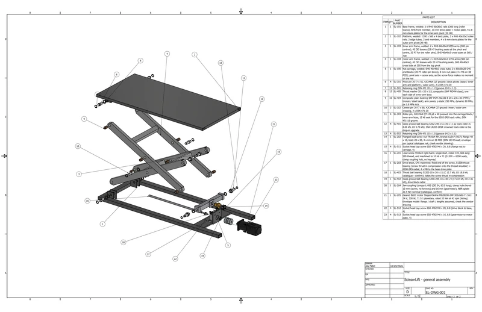

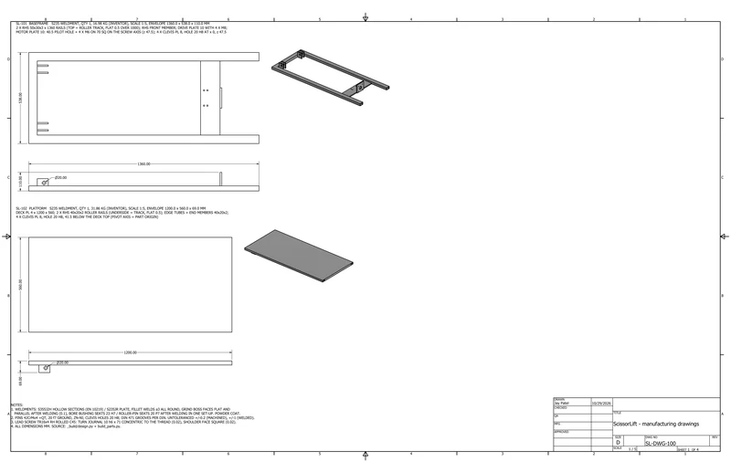

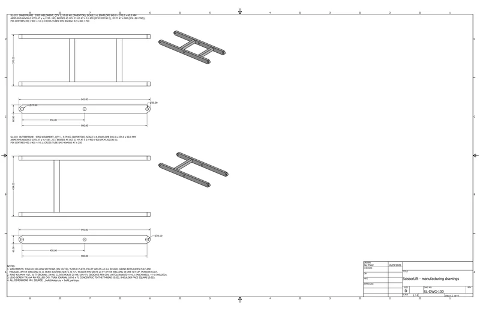

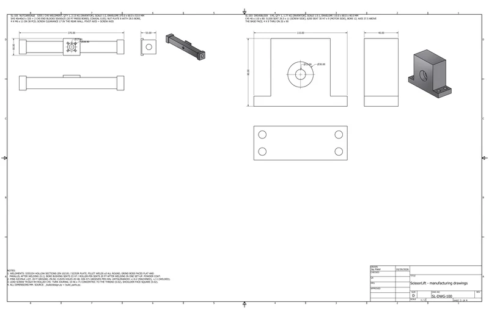

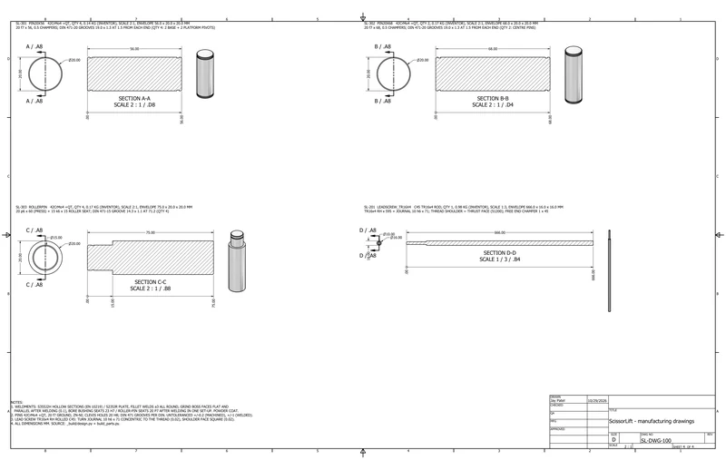
05Analysissimulated unless stated
A1 Forces

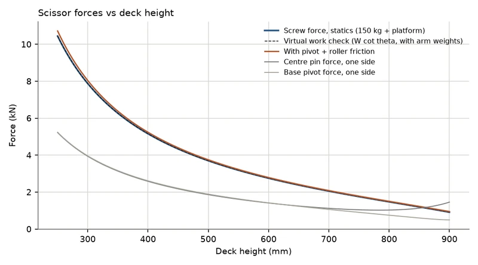

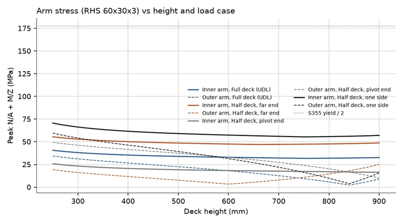
A2 Drive

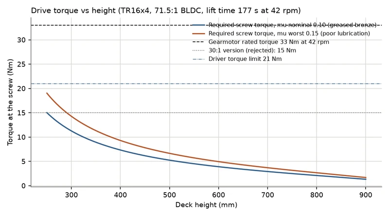

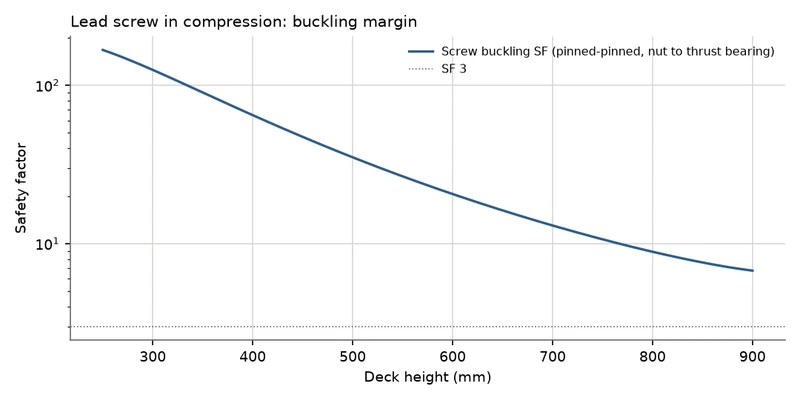
06Results8 checks
| Check | Result | Margin / status |
|---|---|---|
| Screw force | 10.7 kN at 250 mm (2.6 % of it pivot and roller friction), 0.9 kN at 900 mm; statics matches virtual work | Calculated |
| Motor torque | 15.0 Nm (mu 0.10) / 19.0 Nm (mu 0.15) needed at the bottom vs 33 Nm rated: SF 2.20 / 1.73 | Calculated |
| Pins | Weakest is the carriage roller pin, 206 MPa in 42CrMo4 (SF 3.15); bushing pressure 14.9 MPa of 80 allowed | Calculated |
| Arms | 70.6 MPa peak (SF 5.0 on S355), column buckling SF 21, weld fatigue SF 2.55 at 50,000 lifts | Calculated |
| Screw and nut | Buckling SF 6.8 or more, nut pressure 12.2 MPa, thrust bearing s0 1.73; self-locking while mu > 0.088 | Calculated |
| Stability | Tip-over SF 3.04 with the load on one side at full height and a 147 N push | Calculated |
| Interference | 0 clashing pairs at 7 heights from 250 to 900 mm; 2.0 mm between the arm frames | Checked in Inventor |
| Kinematics | Deck height, arm angle and carriage position match the design equations exactly at all 7 heights | Measured in Inventor |
07Files7 downloads
- Calculation reportPDF · 308 kB
- Assembly drawingPDF · 518 kB
- Manufacturing drawingsPDF · 376 kB
- Bill of materialsCSV · 9 kB
- Test summaryMD · 6 kB
- Buildability checkMD · 6 kB
- Assembly STEPSTP · 722 kB
08Limits and assumptionsread before quoting a number
Designed and calculated only: the lift has not been built, and every number is a CAD measurement, a calculation or a catalogue value. The gearmotor ratings come from StepperOnline listings, and its geometry is an envelope model. Bearing ratings are distributor listings of SKF data. Friction values (nut 0.10-0.15, bushings 0.10, roller drag 0.5 %) are typical class values, and the 10 % tip-over push is my assumption. Stresses are low enough for beam theory, so there's no FEA. All prices are estimates. The screw's self-locking margin is small, so a brake or maintenance prop is listed as an open item. The first project plan listed a hydraulic cylinder; I chose a lead-screw drive so the table is self-contained and electric.